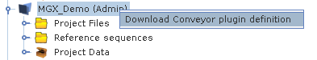

Next: Workflow requirements Up: Implementing custom analysis pipelines Previous: Implementing custom analysis pipelines Contents
In order to implement a custom workflow, the Conveyor Designer needs to be configured with a definition of available Conveyor plugins and node types. This is easily achieved by importing a plugin dump file, which contains a list of data types and nodes provided by a Conveyor installation.
To use the Designer to implement a workflow for the MGX framework, a corresponding plugin dump file can be obtained from within MGX by right-clicking on the project name (3.2).
|

|
Afterwards, start the Designer application and define a new provider (Right-click on “Available providers”). Make sure to specify “Plugin dump file” (3.3) as the type of plugin set and select the file generated by MGX. Once the plugin dump file has been imported, you are ready to implement new workflows. Initially starting with an empty sheet, nodes can be dragged from the list of all available nodes on the left and placed onto the sheet. Node connections are created by clicking on a node, keeping the mouse button pressed and releasing it over the connections target node, thus creating the link; in ambiguous cases, e.g. for nodes with several unconnected inputs/outputs, a dialog will allow to select the desired connection. Nodes may also require node-specific configuration, which can be edited from a nodes context menu. A red border around a node indicates missing configuration items or connections.
Sebastian Jaenicke, 2024-02-18